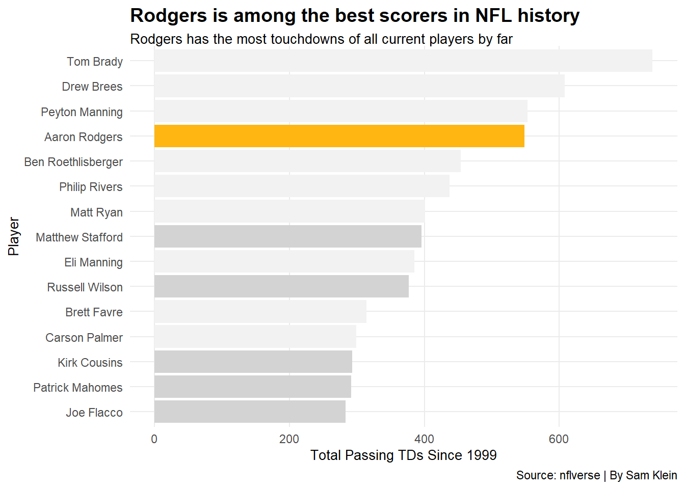
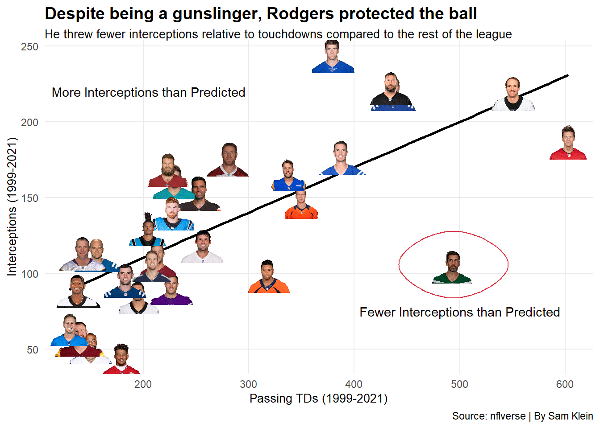
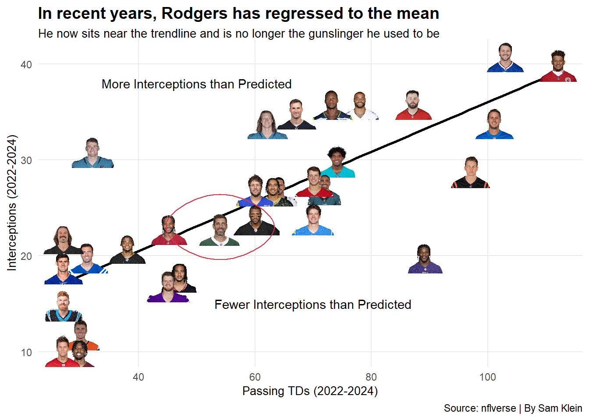
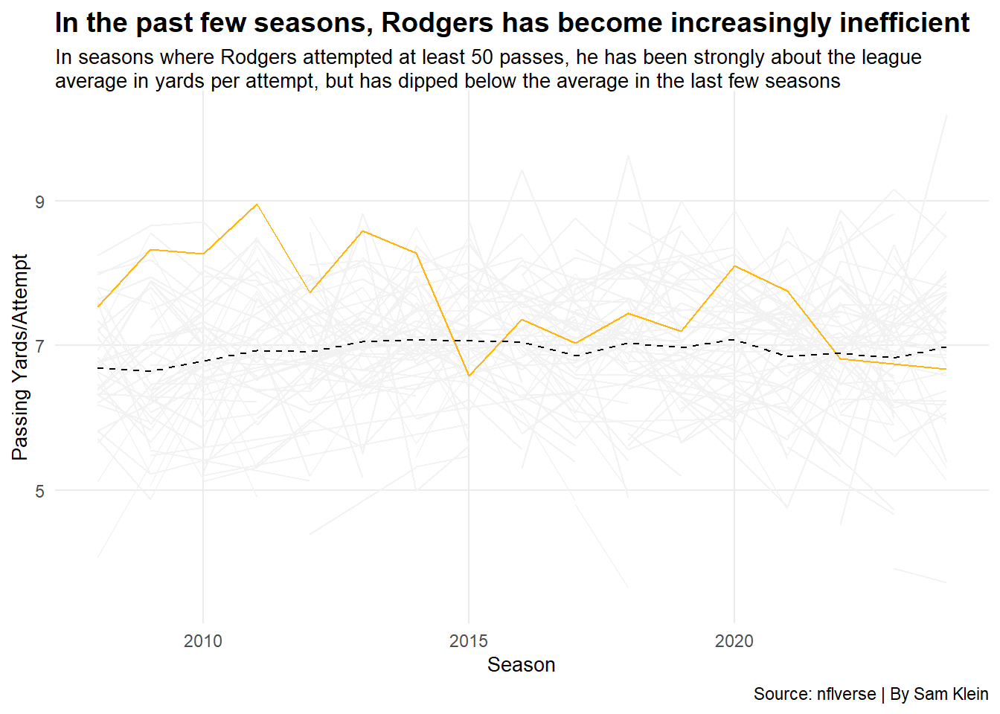

Aaron Rodgers is considered one of the most talented quarterbacks ever to suit up in the NFL. After initially sliding to the 24th pick in the 2005 NFL Draft, Rodgers quickly made teams regret passing him up, as he would go on to win 4 MVPs in his career and a Super Bowl MVP in 2010. In addition, Rodgers practically ran the NFC North, winning the division in half of the years he played in Green Bay.
Here are the 15 quarterbacks with the most touchdowns in the NFL since 1999. You’ll notice that Rodgers is 4th on that list, creeping up on Peyton Manning.
Code
qb_player_box <-load_player_stats(seasons =1999:2024, stat_type ="offense") |>filter(position =="QB")top_15 <- qb_player_box |>group_by(player_display_name) |>summarise(passing_tds =sum(passing_tds)) |>top_n(15, passing_tds) |>arrange(desc(passing_tds))qb_tds <- qb_player_box |>group_by(player_display_name) |>summarise(passing_tds =sum(passing_tds)) |>filter(player_display_name %in% top_15$player_display_name)rodgers <- qb_tds |>filter(player_display_name =="Aaron Rodgers")active_players <-c("Matthew Stafford", "Russell Wilson", "Kirk Cousins", "Patrick Mahomes", "Joe Flacco","Derek Carr", "Andy Dalton")active_qbs <- qb_tds |>filter(qb_tds$player_display_name %in% active_players)ggplot() +geom_bar(data = qb_tds,aes(x =reorder(player_display_name, passing_tds),weight = passing_tds ),fill ="#f2f2f2" ) +geom_bar(data = rodgers,aes(x = player_display_name,weight = passing_tds ),fill ="#FFB612" ) +geom_bar(data = active_qbs,aes(x = player_display_name,weight = passing_tds ),fill ="#d3d3d3" ) +coord_flip() +labs(y ="Total Passing TDs Since 1999",x ="Player",title ="Rodgers is among the best scorers in NFL history",subtitle ="Rodgers has the most touchdowns of all current players by far",caption ="Source: nflverse | By Sam Klein" ) +theme_minimal() +theme(plot.title =element_text(size =14, face ="bold"),plot.subtitle =element_textbox_simple(size =10),axis.title =element_text(size =10),panel.grid.minor =element_blank() )

Unfortunately - or fortunately for the Bears - nothing lasts forever. After his latest MVP in 2021, it felt as though the Packers were at an impasse. The then 38-year-old Rodgers had failed to bring the franchise a Super Bowl in over a decade, and the team was consistently bounced late in the playoffs.
It was speculated that Rodgers may retire or ask to be traded to another team, but Rodgers decided to return to the Packers for his 18th season. The decision wouldn’t prove fruitful, as the Packers failed to make the playoffs after losing to the rival Lions in Week 18.
That offseason, Rodgers requested a trade and ended up on the New York Jets, a franchise starved for a competent quarterback and their first playoff win since the 2010 season. For the first time in years, the Jets had legitimate hope going into the 2023 season, and it felt as though Rodgers’ career could be revived.
Those hopes were quickly dashed in the Jets’ Week 1 game against the Bills. Rodgers suffered a season-ending Achilles tear just four plays into the season, and the Jets were back to square one.
Unsurprisingly, the Jets missed the playoffs, looking forward to Rodgers’ return in 2024. The anticipation was misguided, however, as Rodgers struggled to muster wins upon returning, ultimately leading to another playoff absence.
In his short time with the Jets, it became apparent that Rodgers was not who he once was. Now in the twilight of his career, Rogers is contemplating retirement while keeping several quarterback-needy teams on the hook.
So, is it time for Rodgers to hang it up?
That question is… complicated. Although Rodgers is no longer the player he used to be, some believe he is still a capable starter, while others wonder if Rodgers still brings value to a team.
One of the best measures of usefulness is ball security. If a quarterback isn’t turning the ball over, he isn’t likely hurting his team’s chances of winning.
Rodgers is a gunslinger - he’s going to throw a lot of touchdowns, but that usually means he will also throw a lot of interceptions. Is he still protecting the ball like he did earlier in his career? Let’s check him against the top 30 quarterbacks in passing touchdowns both in the last 3 seasons and in the previous 22 seasons.
Code
palmer <-"https://a.espncdn.com/combiner/i?img=/i/headshots/nfl/players/full/4459.png&w=350&h=254"romo <-"https://a.espncdn.com/combiner/i?img=/i/headshots/nfl/players/full/5209.png&w=350&h=254"cutler <-"https://a.espncdn.com/combiner/i?img=/i/headshots/nfl/players/full/9597.png&w=350&h=254"favre <-"https://a.espncdn.com/combiner/i?img=/i/headshots/nfl/players/full/112.png&w=350&h=254"qb_first_n <- qb_player_box |>filter(season %in%2005:2021) |>group_by(player_display_name) |>summarise(passing_tds =sum(passing_tds),interceptions =sum(interceptions),games =n(),headshot =last(headshot_url))top_30 <- qb_first_n |>top_n(30, passing_tds)qb_first_n <- qb_first_n |>filter(player_display_name %in% top_30$player_display_name) |>arrange(desc(passing_tds))qb_first_n$headshot[11] <- palmerqb_first_n$headshot[12] <- romoqb_first_n$headshot[14] <- cutlerqb_first_n$headshot[26] <- favrerodgers_first_n <- qb_first_n |>filter(player_display_name =="Aaron Rodgers")qb_last_3 <- qb_player_box |>filter(season %in%2022:2024) |>group_by(player_display_name) |>summarise(passing_tds =sum(passing_tds),interceptions =sum(interceptions),games =n(),headshot =last(headshot_url))top_30 <- qb_last_3 |>top_n(30, passing_tds)qb_last_3 <- qb_last_3 |>filter(player_display_name %in% top_30$player_display_name) |>arrange(desc(passing_tds))rodgers_last_3 <- qb_last_3 |>filter(player_display_name =="Aaron Rodgers")ggplot() +geom_smooth(data = qb_first_n,aes(x = passing_tds, y = interceptions ),method = lm, se =FALSE,color ="black",alpha =0.3 ) +geom_image(data = qb_first_n,aes(x = passing_tds, y = interceptions, image = headshot ),size = .15 ) +geom_encircle(data = rodgers_first_n, aes(x = passing_tds, y = interceptions ), s_shape =0, expand =0, color ="#dc3545" ) +geom_text(data =NULL, aes(x =500, y =75, label ="Fewer Interceptions than Predicted" ) ) +geom_text(data =NULL, aes(x =205, y =220, label ="More Interceptions than Predicted" ) ) +labs(x ="Passing TDs (1999-2021)",y ="Interceptions (1999-2021)",title ="Despite being a gunslinger, Rodgers protected the ball",subtitle ="He threw fewer interceptions relative to touchdowns compared to the rest of the league",caption ="Source: nflverse | By Sam Klein" ) +theme_minimal() +theme(plot.title =element_text(size =14, face ="bold"),plot.subtitle =element_textbox_simple(size =10),axis.title =element_text(size =10),panel.grid.minor =element_blank() )

Code
ggplot() +geom_smooth(data = qb_last_3,aes(x = passing_tds, y = interceptions ),method = lm, se =FALSE,color ="black",alpha =0.3 ) +geom_image(data = qb_last_3,aes(x = passing_tds, y = interceptions, image = headshot ),size = .15 ) +geom_encircle(data = rodgers_last_3, aes(x = passing_tds, y = interceptions ), s_shape =0, expand =0, color ="#dc3545" ) +geom_text(data =NULL, aes(x =70, y =15, label ="Fewer Interceptions than Predicted" ) ) +geom_text(data =NULL, aes(x =50, y =38, label ="More Interceptions than Predicted" ) ) +labs(title ="In recent years, Rodgers has regressed to the mean",subtitle ="He now sits near the trendline and is no longer the gunslinger he used to be",x ="Passing TDs (2022-2024)",y ="Interceptions (2022-2024)",caption ="Source: nflverse | By Sam Klein" ) +theme_minimal() +theme(plot.title =element_text(size =14, face ="bold"),plot.subtitle =element_textbox_simple(size =10),axis.title =element_text(size =10),panel.grid.minor =element_blank() )

Its clear that Rodgers isn’t world-beating anymore, but he’s still throwing fewer interceptions than the regression line would predict. Unfortunately for Rodgers, this information alone doesn’t paint the whole picture.
In sports, its all about efficiency. NFL teams are constantly filling holes in their roster, replacing players that aren’t as efficient as other available players. This is most evident in the NFL Draft, where a team can CHEAPLY replace faltering starters on their team.
As a quarterback, efficiency is measured using metrics like yards per attempt or completion percentage. We’ll investigate the former.
Clearly there’s been some regression here, but we’re comparing Rodgers to the greats. NFL teams want to know how the player is producing relative to other ACTIVE players at the position.
Code
qb_ypa <- qb_player_box |>group_by(player_display_name, season) |>summarise(passing_yards =sum(passing_yards),attempts =sum(attempts),games =n()) |>mutate(ypa = passing_yards/attempts) |>filter(attempts >50, season >=2008) |>arrange(player_display_name, season)rodgers_ypa <- qb_ypa |>filter(player_display_name =="Aaron Rodgers")league_average <- qb_ypa |>group_by(season) |>summarise(average =mean(ypa))ggplot() +geom_line(data = qb_ypa,aes(x = season,y = ypa,group = player_display_name ),color ="#f2f2f2" ) +geom_line(data = rodgers_ypa,aes(x = season,y = ypa ),color ="#FFB612" ) +geom_line(data = league_average,aes(x = season,y = average ),color ="black",linetype =2 ) +labs(y ="Passing Yards/Attempt",x ="Season",title ="In the past few seasons, Rodgers has become increasingly inefficient",subtitle ="In seasons where Rodgers attempted at least 50 passes, he has been strongly about the league average in yards per attempt, but has dipped below the average in the last few seasons",caption ="Source: nflverse | By Sam Klein" ) +theme_minimal() +theme(plot.title =element_text(size =14, face ="bold"),plot.subtitle =element_textbox_simple(size =10),axis.title =element_text(size =10),panel.grid.minor =element_blank() )

Hard to argue against this one. At his peak, Rodgers was throwing for nearly 9 yards per attempt, but in 2024 he sits below the league average at less than 7 yards per attempt.
So, in addition to protecting the ball at a worse rate, Rodgers is less efficient at moving the ball than the league average. This will likely not bode well for teams who are looking for someone to simply come in and “game manage”.
Does this mean it’s time for Rodgers to retire? At this juncture, it seems as though Rodgers is on a steep slope that will only continue to plummet, so he may want to go out on his own terms before the NFL forces his hand. At the same time, there are quarterback-needy teams - like my Steelers - with quarterbacks who aren’t producing even to the level of 2024 Rodgers.
I’m inclined to tell the man to retire. The NFL is a business - if Rodgers doesn’t make the decision for himself, one day it will be made for him. And, as evidenced by the graphs, that day is approaching.
Time will tell if Rodgers will be back for year 21.